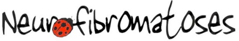

MK Calendar 2015 For Charity
This year is a little bit different. I’ve decided to use my MK calendar to help raise funds for charity.
The Calendar is still free, but I’d be delighted if you would like to make a donation to this, which is a cause dear to my heart. So please donate anything you can afford, it all helps.
I've chosen to help research for Neurofibromatosis diseases, of which type 1 is also known as Von Recklinghausen disease.
Below you will find the direct link to the foundation.
A.N.R means Foundation Neurofibromatosis & Recklinghausen
For more information about the disease click
here .
You can use Paypal, wire transfert, or credit card (with the paypal link below).
Don’t forget to mention A.N.R-MKCalendar2015 and your country with your payement.
(If you need receipt, mention your email adress too)
For wire transfert
Download
Bank Details
Le calendrier MK 2015 pour l'ANR
Cette année est un peu différente, j’ai décidé d'utiliser mon Calendrier-MK-2015 afin de récolter des dons pour une association. Le calendrier est toujours bien entendu gratuit, mais je serai ravie si vous pouviez faire un don à cette association qui me tient tant à coeur. Merci de donner ce que vous pouvez, tout peut aider.
J’ai choisi d’aider la recherche sur les neurofibromatoses dont la plus importante, de type 1, est connue sous le nom de maladie de von Recklinghausen.
Vous trouverez ci-dessous les éléments pour faire votre don à l’association (Paypal, virement bancaire, CB, Chèque).
Et le lien de l’association, pour plus d’informations sur la maladie, et les actions.
A.N.R signifie Association Neurofibromatose & Recklinghausen
PDF explicatif sur la maladie
Merci de mentionner A.N.R-MKCalendar2015 et votre pays avec votre paiement.
** par virement de votre compte bancaire vers le compte de l’association (Crédit Mutuel – Agence de Blagnac) :
IBAN :
FR76 1027 8022 1700 0133 3144 025
BIC :
CMCIFR2A
Télécharger un IBAN de l’ANR (anciennement RIB)
** ou par chèque adressé à :
A.N.R – Julien THURION
9, La Prade
23290 SAINT-ETIENNE-DE-FURSAC
Pour les virements et les chèques, autant que possible, indiquer :
le motif de votre paiement
- une adresse mail pour vous envoyer le reçu sans frais.